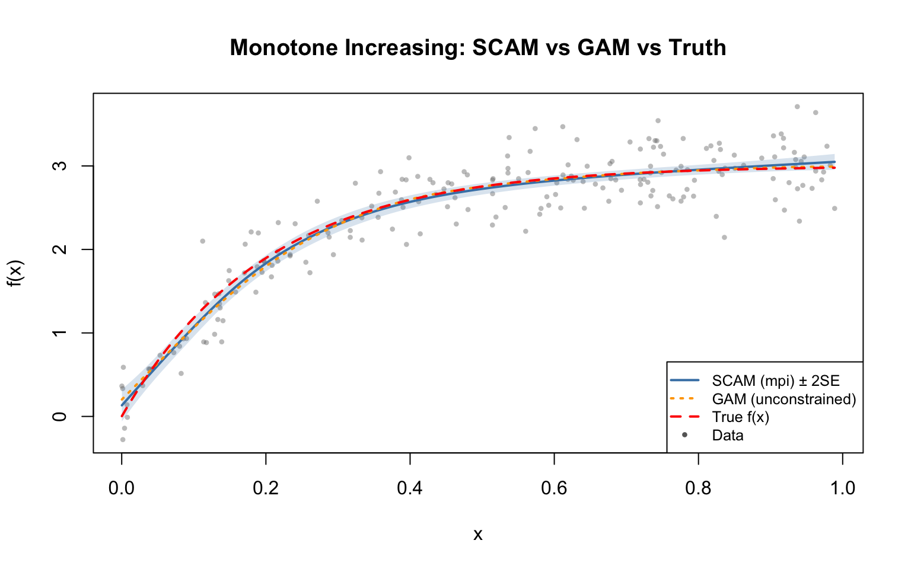
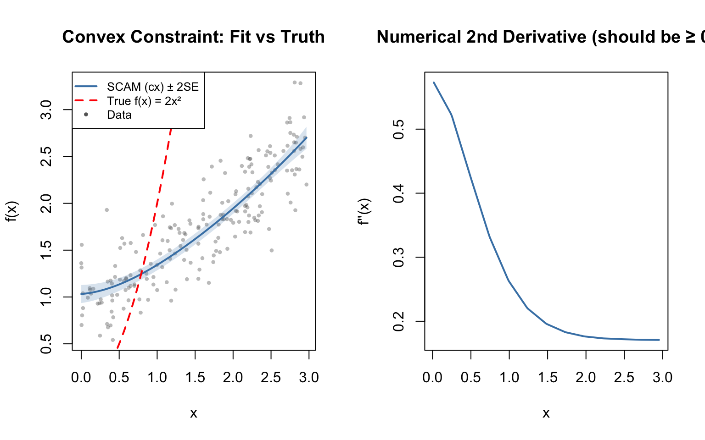
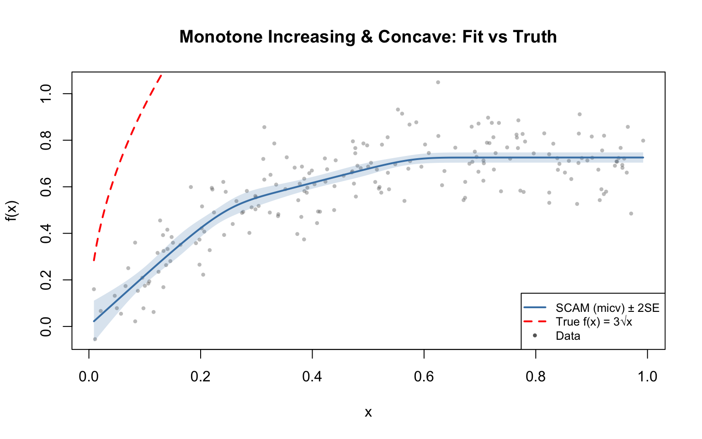

library(scam)This is scam 1.2-19.library(mgcv)Loading required package: nlmeThis is mgcv 1.9-3. For overview type 'help("mgcv-package")'.This vignette demonstrates shape-constrained additive models using the R scam package, fitting the same simulated data as the Julia vignette for comparison.
library(scam)This is scam 1.2-19.library(mgcv)Loading required package: nlmeThis is mgcv 1.9-3. For overview type 'help("mgcv-package")'.True function: \(f(x) = 3(1 - e^{-5x})\)
dat <- read.csv("../data.csv")
x <- dat$x
y <- dat$y
n <- nrow(dat)
f_true <- 3.0 * (1.0 - exp(-5.0 * x))m_gam <- gam(y ~ s(x, k = 15, bs = "cr"), data = dat)
m_scam <- scam(y ~ s(x, k = 15, bs = "mpi"), data = dat)yhat_gam <- predict(m_gam)
yhat_scam <- predict(m_scam)
rmse_gam <- sqrt(mean((yhat_gam - f_true)^2))
rmse_scam <- sqrt(mean((yhat_scam - f_true)^2))
cat("RMSE (unconstrained GAM):", round(rmse_gam, 4), "\n")RMSE (unconstrained GAM): 0.0596 cat("RMSE (SCAM, monotone increasing):", round(rmse_scam, 4), "\n")RMSE (SCAM, monotone increasing): 0.0501 diffs_scam <- diff(yhat_scam)
diffs_gam <- diff(yhat_gam)
cat("Min successive difference (SCAM):", round(min(diffs_scam), 6), "\n")Min successive difference (SCAM): 1e-06 cat("All non-decreasing (SCAM):", all(diffs_scam >= -1e-10), "\n")All non-decreasing (SCAM): TRUE cat("Min successive difference (GAM):", round(min(diffs_gam), 6), "\n")Min successive difference (GAM): 1e-06 cat("All non-decreasing (GAM):", all(diffs_gam >= -1e-10), "\n")All non-decreasing (GAM): TRUE x_grid <- seq(min(x), max(x), length.out = 200)
nd <- data.frame(x = x_grid)
pred_scam <- predict(m_scam, newdata = nd, se.fit = TRUE)
pred_gam <- predict(m_gam, newdata = nd, se.fit = TRUE)
f_true_grid <- 3 * (1 - exp(-5 * x_grid))
plot(x, y, col = adjustcolor("grey40", 0.4), pch = 16, cex = 0.6,
xlab = "x", ylab = "f(x)",
main = "Monotone Increasing: SCAM vs GAM vs Truth")
polygon(c(x_grid, rev(x_grid)),
c(pred_scam$fit + 2 * pred_scam$se.fit,
rev(pred_scam$fit - 2 * pred_scam$se.fit)),
col = adjustcolor("steelblue", 0.2), border = NA)
lines(x_grid, pred_scam$fit, col = "steelblue", lwd = 2)
lines(x_grid, pred_gam$fit, col = "orange", lwd = 2, lty = 3)
lines(x_grid, f_true_grid, col = "red", lwd = 2, lty = 2)
legend("bottomright",
legend = c("SCAM (mpi) ± 2SE", "GAM (unconstrained)", "True f(x)", "Data"),
col = c("steelblue", "orange", "red", "grey40"),
lwd = c(2, 2, 2, NA), lty = c(1, 3, 2, NA),
pch = c(NA, NA, NA, 16), pt.cex = c(NA, NA, NA, 0.6),
bg = "white", cex = 0.8)
True function: \(f(x) = 2x^2\)
dat_cx <- read.csv("../data_cx.csv")
x_cx <- dat_cx$x
y_cx <- dat_cx$y
dat2 <- data.frame(y = y_cx, x = x_cx)
f_true2 <- 2 * x_cx^2m_cx <- scam(y ~ s(x, k = 15, bs = "cx"), data = dat2)
yhat_cx <- predict(m_cx)
rmse_cx <- sqrt(mean((yhat_cx - f_true2)^2))
cat("RMSE (convex SCAM):", round(rmse_cx, 4), "\n")RMSE (convex SCAM): 6.7673 first_diffs <- diff(yhat_cx)
second_diffs <- diff(first_diffs)
cat("Min second difference:", round(min(second_diffs), 6), "\n")Min second difference: -0.061069 cat("All convex:", all(second_diffs >= -1e-10), "\n")All convex: FALSE x_grid_cx <- seq(min(x_cx), max(x_cx), length.out = 200)
nd_cx <- data.frame(x = x_grid_cx)
pred_cx <- predict(m_cx, newdata = nd_cx, se.fit = TRUE)
f_true2_grid <- 2 * x_grid_cx^2
par(mfrow = c(1, 2))
# Left: fit vs truth
plot(x_cx, y_cx, col = adjustcolor("grey40", 0.4), pch = 16, cex = 0.6,
xlab = "x", ylab = "f(x)", main = "Convex Constraint: Fit vs Truth")
polygon(c(x_grid_cx, rev(x_grid_cx)),
c(pred_cx$fit + 2 * pred_cx$se.fit,
rev(pred_cx$fit - 2 * pred_cx$se.fit)),
col = adjustcolor("steelblue", 0.2), border = NA)
lines(x_grid_cx, pred_cx$fit, col = "steelblue", lwd = 2)
lines(x_grid_cx, f_true2_grid, col = "red", lwd = 2, lty = 2)
legend("topleft",
legend = c("SCAM (cx) ± 2SE", "True f(x) = 2x²", "Data"),
col = c("steelblue", "red", "grey40"),
lwd = c(2, 2, NA), lty = c(1, 2, NA),
pch = c(NA, NA, 16), pt.cex = c(NA, NA, 0.6),
bg = "white", cex = 0.8)
# Right: numerical second derivative
dx <- diff(x_grid_cx)
first_deriv <- diff(pred_cx$fit) / dx
x_mid <- (x_grid_cx[-1] + x_grid_cx[-length(x_grid_cx)]) / 2
dx2 <- diff(x_mid)
second_deriv <- diff(first_deriv) / dx2
x_mid2 <- (x_mid[-1] + x_mid[-length(x_mid)]) / 2
plot(x_mid2, second_deriv, type = "l", col = "steelblue", lwd = 2,
xlab = "x", ylab = "f''(x)",
main = "Numerical 2nd Derivative (should be ≥ 0)")
abline(h = 0, col = "red", lwd = 1, lty = 2)
par(mfrow = c(1, 1))True function: \(f(x) = 3\sqrt{x}\)
dat_micv <- read.csv("../data_micv.csv")
x_micv <- dat_micv$x
y_micv <- dat_micv$y
dat3 <- data.frame(y = y_micv, x = x_micv)
f_true3 <- 3 * sqrt(x_micv)m_micv <- scam(y ~ s(x, k = 15, bs = "micv"), data = dat3)
yhat_micv <- predict(m_micv)
rmse_micv <- sqrt(mean((yhat_micv - f_true3)^2))
cat("RMSE (monotone increasing + concave):", round(rmse_micv, 4), "\n")RMSE (monotone increasing + concave): 1.5225 first_diffs_micv <- diff(yhat_micv)
second_diffs_micv <- diff(first_diffs_micv)
cat("Min first difference (monotonicity):", round(min(first_diffs_micv), 6), "\n")Min first difference (monotonicity): 0 cat("Max second difference (concavity):", round(max(second_diffs_micv), 6), "\n")Max second difference (concavity): 0.032084 cat("Monotone increasing:", all(first_diffs_micv >= -1e-10), "\n")Monotone increasing: TRUE cat("Concave:", all(second_diffs_micv <= 1e-10), "\n")Concave: FALSE x_grid_micv <- seq(min(x_micv), max(x_micv), length.out = 200)
nd_micv <- data.frame(x = x_grid_micv)
pred_micv <- predict(m_micv, newdata = nd_micv, se.fit = TRUE)
f_true3_grid <- 3 * sqrt(x_grid_micv)
plot(x_micv, y_micv, col = adjustcolor("grey40", 0.4), pch = 16, cex = 0.6,
xlab = "x", ylab = "f(x)",
main = "Monotone Increasing & Concave: Fit vs Truth")
polygon(c(x_grid_micv, rev(x_grid_micv)),
c(pred_micv$fit + 2 * pred_micv$se.fit,
rev(pred_micv$fit - 2 * pred_micv$se.fit)),
col = adjustcolor("steelblue", 0.2), border = NA)
lines(x_grid_micv, pred_micv$fit, col = "steelblue", lwd = 2)
lines(x_grid_micv, f_true3_grid, col = "red", lwd = 2, lty = 2)
legend("bottomright",
legend = c("SCAM (micv) ± 2SE", "True f(x) = 3√x", "Data"),
col = c("steelblue", "red", "grey40"),
lwd = c(2, 2, NA), lty = c(1, 2, NA),
pch = c(NA, NA, 16), pt.cex = c(NA, NA, 0.6),
bg = "white", cex = 0.8)
summary(m_scam)
Family: gaussian
Link function: identity
Formula:
y ~ s(x, k = 15, bs = "mpi")
Parametric coefficients:
Estimate Std. Error t value Pr(>|t|)
(Intercept) 2.41623 0.02038 118.6 <2e-16 ***
---
Signif. codes: 0 '***' 0.001 '**' 0.01 '*' 0.05 '.' 0.1 ' ' 1
Approximate significance of smooth terms:
edf Ref.df F p-value
s(x) 3.408 4.201 337.9 <2e-16 ***
---
Signif. codes: 0 '***' 0.001 '**' 0.01 '*' 0.05 '.' 0.1 ' ' 1
R-sq.(adj) = 0.8768 Deviance explained = 87.9%
GCV score = 0.084902 Scale est. = 0.083031 n = 200summary(m_cx)
Family: gaussian
Link function: identity
Formula:
y ~ s(x, k = 15, bs = "cx")
Parametric coefficients:
Estimate Std. Error t value Pr(>|t|)
(Intercept) 1.74232 0.02041 85.37 <2e-16 ***
---
Signif. codes: 0 '***' 0.001 '**' 0.01 '*' 0.05 '.' 0.1 ' ' 1
Approximate significance of smooth terms:
edf Ref.df F p-value
s(x) 1.857 2.189 289.6 <2e-16 ***
---
Signif. codes: 0 '***' 0.001 '**' 0.01 '*' 0.05 '.' 0.1 ' ' 1
Rank: 14/15
R-sq.(adj) = 0.7606 Deviance explained = 76.3%
GCV score = 0.08451 Scale est. = 0.083303 n = 200summary(m_micv)
Family: gaussian
Link function: identity
Formula:
y ~ s(x, k = 15, bs = "micv")
Parametric coefficients:
Estimate Std. Error t value Pr(>|t|)
(Intercept) 0.591117 0.007384 80.06 <2e-16 ***
---
Signif. codes: 0 '***' 0.001 '**' 0.01 '*' 0.05 '.' 0.1 ' ' 1
Approximate significance of smooth terms:
edf Ref.df F p-value
s(x) 3.393 3.714 160.9 <2e-16 ***
---
Signif. codes: 0 '***' 0.001 '**' 0.01 '*' 0.05 '.' 0.1 ' ' 1
Rank: 14/15
R-sq.(adj) = 0.7491 Deviance explained = 75.3%
GCV score = 0.011149 Scale est. = 0.010904 n = 200
BFGS termination condition:
1.99322e-05| Feature | R scam |
Julia GAM.jl scam |
|---|---|---|
| Monotone increasing | bs="mpi" |
bs=:mpi |
| Monotone decreasing | bs="mpd" |
bs=:mpd |
| Convex | bs="cx" |
bs=:cx |
| Concave | bs="cv" |
bs=:cv |
| Mono. inc. + convex | bs="micx" |
bs=:micx |
| Mono. inc. + concave | bs="micv" |
bs=:micv |
| Mono. dec. + convex | bs="mdcx" |
bs=:mdcx |
| Mono. dec. + concave | bs="mdcv" |
bs=:mdcv |